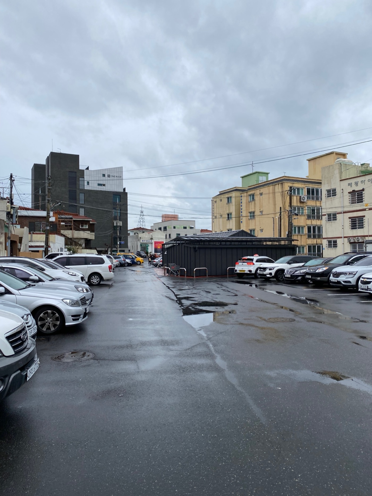

Project / Research
워케이션 개발 프로젝트 타당성 조사
A Feasibility Study for a Workation Development Project

제주시 구도심의 기존 건물을 대상으로 워케이션 기능 도입 가능성을 검토하고, 시설 개선부터 브랜딩과 운영 전략까지 단계별 개발 방향을 제안한 타당성 조사 프로젝트다.
This feasibility study evaluated whether an existing building in old downtown Jeju could support a workation program, proposing phased directions spanning spatial upgrades, branding, and operations.
프로젝트 개요
본 프로젝트는 제주시 삼도일동에 위치한 W사의 공간을 대상으로, 해당 건물이 워케이션 기능을 수행할 수 있는지 검토하고 운영 방향을 수립하기 위해 진행되었다. 단순한 숙박 기능이 아닌, 일과 체류가 결합된 새로운 이용 방식을 상정하며 공간의 잠재력과 시장 적합성을 함께 살펴보는 데 초점을 맞췄다.
조사 범위는 지하 1층부터 지상 5층까지 이어지는 38개실 규모의 건물과 주변 상권, 주거 환경을 포함한다. 대상지는 제주시 구도심에 위치해 있으며 공항에서 차량으로 약 10분 거리에 있어 접근성이 높다는 장점을 지닌다. 현장 조사는 2022년 1월 중 2일간 진행되었고, 시설 현황 파악, 주변 시장 분석, 워케이션 운영에 필요한 기본 조건 검토를 중심으로 수행되었다.
주요 타깃은 팀 단위 워케이션 이용자와 한달살이와 같은 장기 체류형 여행객이며, B2B 기업 고객 유치 가능성도 함께 검토되었다. 연구 결과는 하드웨어 개선, 브랜딩, 운영 전략 수립을 포괄하는 세 가지 방향안으로 정리되었고, 각 시나리오별 예상 소요 기간과 예산 규모도 함께 제안되었다.
결과적으로 이 프로젝트는 기존 건물을 워케이션 거점으로 전환할 때 필요한 입지 분석, 프로그램 구상, 사용자 설정, 운영 전략을 통합적으로 검토한 초기 사업 기획 리서치로 볼 수 있다.
This project examined a property owned by Company W in Samdo 1-dong, Jeju City, to determine whether it could support a workation program and what kind of operational direction would be appropriate. The study focused not only on accommodation but on the combined condition of working and staying, evaluating both spatial potential and market fit.
The scope covered a 38-room building with one basement level and five above-ground floors, as well as the surrounding commercial streets and residential context in old downtown Jeju. Its location, approximately ten minutes by car from the airport, was identified as a major advantage. A two-day field survey in January 2022 assessed the facility's current condition, the local market context, and the baseline requirements for workation use.
The main target groups were team-based workation users and long-term travelers seeking month-long stays, while B2B corporate demand was also considered. The final proposal outlined three strategic directions spanning hardware improvements, branding, and operational planning, with indicative timelines and budget scales for each option.
In that sense, the project functioned as an early-stage business planning study that integrated site analysis, program framing, user targeting, and operational strategy for converting an existing building into a Jeju workation base.
State. 제안 Suggestion
Role. 리서치 Research
Partner. 스마일 Smile, 클로이 Chloe
Client. W사